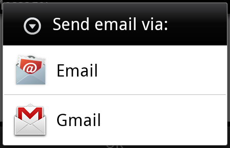
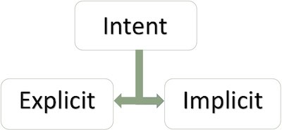
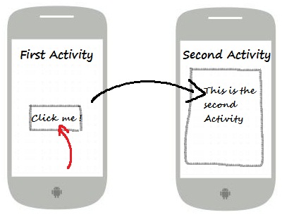
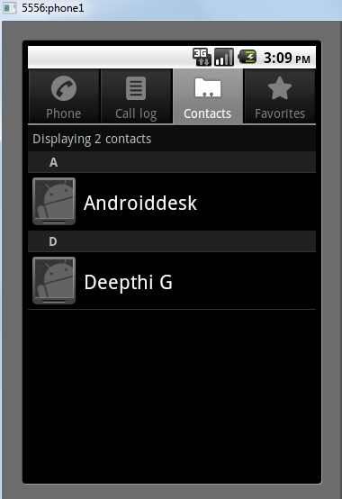
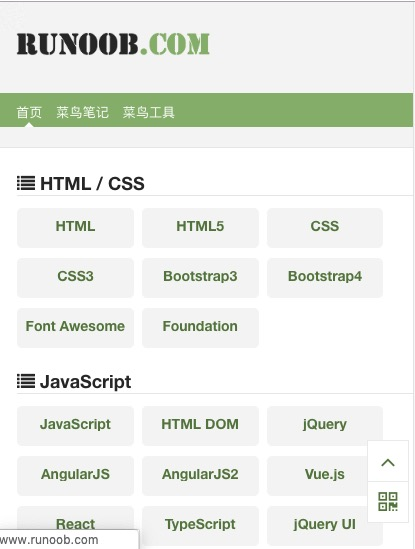
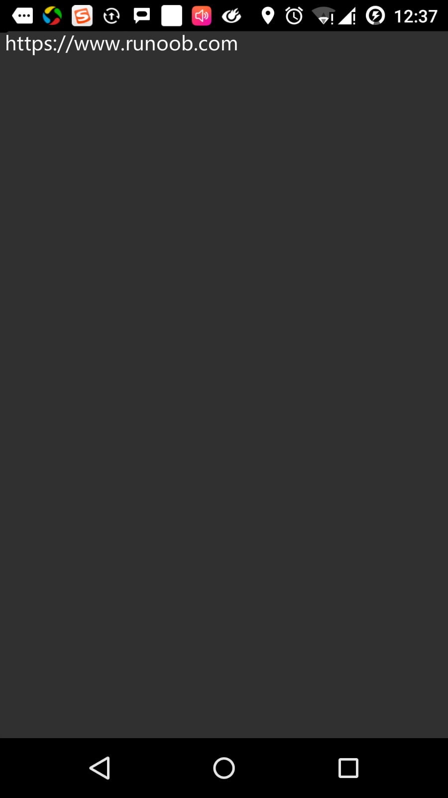

Android インテント（Intent）とフィルタ（Filter）
Android インテントは、実行する操作の抽象的な記述です。startActivity でアクティビティを起動したり、broadcastIntent でそれに興味を持つ任意のブロードキャストレシーバコンポーネントにブロードキャストを送信したり、startService(Intent) または bindService(Intent, ServiceConnection, int) でバックグラウンドサービスと通信したりできます。
インテント自体（Intent オブジェクト）は、実行する操作の抽象的な記述を保持する受動的なデータ構造です。
例えば、メールクライアントを開いて Android デバイスからメールを送信する必要があるアクティビティがあるとします。この目的のために、アクティビティは適切なセレクタを備えた ACTION_SEND を Android インテントハンドラに送信する必要があります。指定されたセレクタは、ユーザーがメールデータをどのように送信するかを決定するための適切なインターフェースを提供します。
Intent email = new Intent(Intent.ACTION_SEND, Uri.parse("mailto:"));
email.putExtra(Intent.EXTRA_EMAIL, recipients);
email.putExtra(Intent.EXTRA_SUBJECT, subject.getText().toString());
email.putExtra(Intent.EXTRA_TEXT, body.getText().toString());
startActivity(Intent.createChooser(email, "Choose an email client from..."));
上記の構文は startActivity メソッドを呼び出してメールアクティビティを起動します。コードの実行結果は次のようになります。

例えば、Android デバイス上でブラウザを使って URL を開く必要があるアクティビティがあるとします。この目的のために、アクティビティは ACTION_WEB_SEARCH インテントを Android インテントハンドラに送信し、ブラウザで指定された URL を開きます。インテントハンドラは一連のアクティビティを解決し、インテントに最も適したアクティビティを選択します。この例では、Web ブラウザアクティビティです。インテントハンドラはウェブアドレスを Web ブラウザに渡し、Web ブラウザアクティビティを開きます。
String q = "https://www.runoob.com"; Intent intent = new Intent(Intent.ACTION_WEB_SEARCH ); intent.putExtra(SearchManager.QUERY, q); startActivity(intent);
上記の例では、Android の検索エンジンで「www.runoob.com」を検索し、アクティビティ上でキーワードの結果を表示します。
アクティビティ、サービス、ブロードキャストレシーバの各コンポーネントには、インテントを配信するための独立したメカニズムがあります。
| 番号 | メソッドと説明 |
|---|---|
| 1 | Context.startActivity(): このメソッドにインテントが渡され、新しいアクティビティを起動したり、既存のアクティビティに新しいことをさせたりします。 |
| 2 | Context.startService(): このメソッドにインテントが渡され、サービスを初期化するか、既存のサービスに新しい情報を渡します。 |
| 3 | Context.sendBroadcast(): このメソッドにインテントが渡され、情報はこれに興味を持つすべてのブロードキャストレシーバに渡されます。 |
インテントオブジェクト
インテントオブジェクトは情報の束です。コンポーネントが受け取るインテントは、Android システムが受け取る情報のようなものです。
インテントオブジェクトには、何と通信するか、何を実行するかに応じて、次のコンポーネントが含まれます。
アクション
これはインテントオブジェクトの必須部分であり、文字列として表現されます。ブロードキャストインテントでは、アクションが発生すると報告されます。アクションは、インテントの他の部分がどのように構成されるかを大きく決定します。Intent クラスは、さまざまなインテントに対応する一連のアクション定数を定義しています。以下は、Android インテントの標準アクションのリストです。
インテントオブジェクト内のアクションは、setAction() メソッドで設定し、getAction() メソッドで読み取ることができます。
データ
データ仕様をインテントフィルタに追加します。この仕様は、単なるデータ型（MIME タイプ属性など）、URI、またはデータ型と URI の両方を含むことができます。URI は、さまざまな部分の属性で指定されます。
これらの URL 形式を指定する属性はオプションですが、互いに独立しています -
- インテントフィルタがスキームを指定しない場合、他のすべての URI プロパティは無視されます。
- フィルタにホストが指定されていない場合、ポートプロパティとすべてのパスプロパティは無視されます。
setData() メソッドは URI でのみデータを指定でき、setType() は MIME タイプでのみデータを指定でき、setDataAndType() は URI と MIME タイプの両方を指定できます。URI は getData() で読み取り、タイプは getType() で読み取ります。
以下は、アクション/データグループの例です -
| 番号 | アクション/データグループと説明 |
|---|---|
| 1 | ACTION_VIEW content://contacts/people/1: ID が 1 のユーザーの情報を表示します。 |
| 2 | ACTION_DIAL content://contacts/people/1: 電話ダイヤラを表示し、ユーザー1のデータを入力します。 |
| 3 | ACTION_VIEW tel:123: 電話ダイヤラを表示し、指定された番号を入力します。 |
| 4 | ACTION_DIAL tel:123: 電話ダイヤラを表示し、指定された番号を入力します。 |
| 5 | ACTION_EDIT content://contacts/people/1: ID が 1 のユーザー情報を編集します。 |
| 6 | ACTION_VIEW content://contacts/people/: ユーザーリストを表示して閲覧できるようにします。 |
| 7 | ACTION_SET_WALLPAPER: 壁紙の選択設定を表示します。 |
| 8 | ACTION_SYNC: データを同期します。デフォルト値は android.intent.action.SYNC です。 |
| 9 | ACTION_SYSTEM_TUTORIAL: プラットフォーム定義のチュートリアルを起動します（デフォルトのチュートリアルまたは起動チュートリアル） |
| 10 | ACTION_TIMEZONE_CHANGED: タイムゾーンが変更されたときに通知します |
| 11 | ACTION_UNINSTALL_PACKAGE: デフォルトのアンインストーラを実行します |
カテゴリ
カテゴリはインテントのオプション部分であり、そのタイプのコンポーネントが処理する必要があるインテントに関する追加情報を含む文字列です。addCategory() メソッドはインテントオブジェクトにカテゴリを追加し、removeCategory() メソッドは以前に追加されたカテゴリを削除し、getCategories() はインテントオブジェクトに設定されたすべてのカテゴリを取得します。以下は、Android インテントの標準カテゴリのリストです。
以下のセクションのインテントフィルタを参照して、カテゴリを使用して対応するインテントに適したアクティビティを選択する方法を確認できます。
エクストラデータ
これは、インテントを処理する必要があるコンポーネントに渡される、キーと値のペアで記述された追加情報です。putExtras() メソッドで設定し、getExtras() メソッドで読み取ります。以下は、Android インテントの標準エクストラデータのリストです。
フラグ
これらのフラグはインテントのオプション部分であり、Android システムがアクティビティを起動する方法や、起動後の処理方法などを示します。
| 番号 | フラグと説明 |
|---|---|
| 1 | FLAG_ACTIVITY_CLEAR_TASK: インテントに設定され、Context.startActivity を介して渡された場合、このフラグは、アクティビティの起動前にそのアクティビティに関連付けられている既存のすべてのタスクをクリアします。アクティビティは空のタスクのルートになり、古いアクティビティはすべて終了します。このフラグは FLAG_ACTIVITY_NEW_TASK と組み合わせて使用できます。 |
| 2 | FLAG_ACTIVITY_CLEAR_TOP: このフラグが設定されている場合、アクティビティは現在実行中のタスク内で起動されます。新しいアクティビティインスタンスは起動されず、その上のすべてのアクティビティが閉じられ、このインテントは新しいインテントとして既存の（現在最上位にある）アクティビティに渡されます。 |
| 3 | FLAG_ACTIVITY_NEW_TASK: このフラグは通常、アクティビティを「ランチャー」スタイルの動作にするために使用されます。ユーザーに独立して実行できるデータを提供し、完全で独立したアクティビティを起動します。 |
コンポーネント名
コンポーネント名オブジェクトは、アクティビティ、サービス、またはブロードキャストレシーバクラスを表すオプションのフィールドです。設定されている場合、インテントオブジェクトは意図されたクラスのインスタンスに渡されます。それ以外の場合、Android はインテント内の他の情報を使用して適切なターゲットを見つけます。コンポーネント名は setComponent()、setClass()、または setClassName() で設定し、getComponent() で取得します。
インテントのタイプ
Android は2種類のインテントをサポートしています。

明示的インテント
明示的インテントは、アプリケーション内部のコンポーネントを接続するために使用されます。アクティビティを別のアクティビティに接続する必要があるとします。その場合、明示的インテントを使用できます。次の図は、ボタンをクリックして最初のアクティビティを2番目のアクティビティに接続することを示しています。

これらのインテントは名前でターゲットコンポーネントを指定し、一般的にアプリケーション内部の通信に使用されます。たとえば、あるアクティビティが子アクティビティを起動したり、兄弟アクティビティを起動したりします。例：
// 通过指定类名的显式意图 Intent i = new Intent(FirstActivity.this, SecondAcitivity.class); // 启动目标活动 startActivity(i);
暗黙的インテント
これらのインテントはターゲットに名前を付けず、コンポーネント名のフィールドは空です。暗黙的インテントは、他のアプリケーションのコンポーネントを起動するためによく使用されます。例：
Intent read1=new Intent(); read1.setAction(android.content.Intent.ACTION_VIEW); read1.setData(ContactsContract.Contacts.CONTENT_URI); startActivity(read1);
上記のコードを実行すると、次の結果が得られます：

ターゲットコンポーネントがインテントを受信したら、getExtras()メソッドを使用して、ソースコンポーネントから送信された追加データを取得できます。例：
// 在代码中的合适位置获取包对象
Bundle extras = getIntent().getExtras();
// 通过键解压数据
String value1 = extras.getString("Key1");
String value2 = extras.getString("Key2");
例
次のインスタンスは、Androidインテントを使用して、さまざまなAndroid組み込みアプリケーションの機能を起動する方法を示しています。
| 手順 | 説明 |
|---|---|
| 1 | Android Studio IDEを使用してAndroidアプリケーションを作成し、「Intent filter」という名前を付け、パッケージ名をcom.runoob.intentfilterとします。プロジェクトを作成する際は、ターゲットSDKを確認し、最新バージョンのAndroid SDKを使用してコンパイルし、高度なAPIを使用するようにしてください。 |
| 2 | src/com.runoob.intentfilter/MainActivity.javaファイルを変更し、「ブラウザを起動」と「電話を起動」という2つのボタンに対応する2つのリスナーを定義するコードを追加します。 |
| 3 | res/layout/activity_main.xmlレイアウトファイルを変更し、線形レイアウトに3つのボタンを追加します。 |
| 4 | Androidエミュレータを起動してアプリケーションを実行し、アプリケーションに加えた変更の結果を確認します。 |
以下はsrc/com.runoob.intentfilter/MainActivity.javaファイルの内容です：
package com.runoob.intentfilter;
import android.content.Intent;
import android.net.Uri;
import android.support.v7.app.ActionBarActivity;
import android.os.Bundle;
import android.view.Menu;
import android.view.MenuItem;
import android.view.View;
import android.widget.Button;
public class MainActivity extends ActionBarActivity {
Button b1,b2;
@Override
protected void onCreate(Bundle savedInstanceState) {
super.onCreate(savedInstanceState);
setContentView(R.layout.activity_main);
b1=(Button)findViewById(R.id.button);
b1.setOnClickListener(new View.OnClickListener() {
@Override
public void onClick(View v) {
Intent i = new Intent(android.content.Intent.ACTION_VIEW, Uri.parse("https://www.runoob.com"));
startActivity(i);
}
});
b2=(Button)findViewById(R.id.button2);
b2.setOnClickListener(new View.OnClickListener() {
@Override
public void onClick(View v) {
Intent i = new Intent(android.content.Intent.ACTION_VIEW,Uri.parse("tel:9510300000"));
startActivity(i);
}
});
}
@Override
public boolean onCreateOptionsMenu(Menu menu) {
getMenuInflater().inflate(R.menu.menu_main, menu);
return true;
}
@Override
public boolean onOptionsItemSelected(MenuItem item) {
// Handle action bar item clicks here. The action bar will
// automatically handle clicks on the Home/Up button, so long
// as you specify a parent activity in AndroidManifest.xml.
int id = item.getItemId();
//noinspection SimplifiableIfStatement
if (id == R.id.action_settings) {
return true;
}
return super.onOptionsItemSelected(item);
}
}
以下はres/layout/activity_main.xmlファイルの内容です：
<RelativeLayout xmlns:android="http://schemas.android.com/apk/res/android"
xmlns:tools="http://schemas.android.com/tools"
android:layout_width="match_parent"
android:layout_height="match_parent"
android:paddingLeft="@dimen/activity_horizontal_margin"
android:paddingRight="@dimen/activity_horizontal_margin"
android:paddingTop="@dimen/activity_vertical_margin"
android:paddingBottom="@dimen/activity_vertical_margin"
tools:context=".MainActivity">
<TextView
android:id="@+id/textView1"
android:layout_width="wrap_content"
android:layout_height="wrap_content"
android:text="意图实例"
android:layout_alignParentTop="true"
android:layout_centerHorizontal="true"
android:textSize="30dp" />
<TextView
android:id="@+id/textView2"
android:layout_width="wrap_content"
android:layout_height="wrap_content"
android:text="www.runoob.com"
android:textColor="#ff87ff09"
android:textSize="30dp"
android:layout_below="@+id/textView1"
android:layout_centerHorizontal="true" />
<ImageButton
android:layout_width="wrap_content"
android:layout_height="wrap_content"
android:id="@+id/imageButton"
android:src="@drawable/ic_launcher.html"
android:layout_below="@+id/textView2"
android:layout_centerHorizontal="true" />
<EditText
android:layout_width="wrap_content"
android:layout_height="wrap_content"
android:id="@+id/editText"
android:layout_below="@+id/imageButton"
android:layout_alignRight="@+id/imageButton"
android:layout_alignEnd="@+id/imageButton" />
<Button
android:layout_width="wrap_content"
android:layout_height="wrap_content"
android:text="启动浏览器"
android:id="@+id/button"
android:layout_alignTop="@+id/editText"
android:layout_alignRight="@+id/textView1"
android:layout_alignEnd="@+id/textView1"
android:layout_alignLeft="@+id/imageButton"
android:layout_alignStart="@+id/imageButton" />
<Button
android:layout_width="wrap_content"
android:layout_height="wrap_content"
android:text="启动电话"
android:id="@+id/button2"
android:layout_below="@+id/button"
android:layout_alignLeft="@+id/button"
android:layout_alignStart="@+id/button"
android:layout_alignRight="@+id/textView2"
android:layout_alignEnd="@+id/textView2" />
</RelativeLayout>
以下はres/values/strings/xmlの内容で、2つの新しい定数を定義しています。
<?xml version="1.0" encoding="utf-8"?> <resources> <string name="app_name">Intent filter</string> <string name="action_settings">Settings</string> </resources>
以下はデフォルトのAndroidManifest.xmlの内容です：
<?xml version="1.0" encoding="utf-8"?>
<manifest xmlns:android="http://schemas.android.com/apk/res/android"
package="com.runoob.intentfilter"
android:versionCode="1"
android:versionName="1.0" >
<uses-sdk
android:minSdkVersion="8"
android:targetSdkVersion="22" />
<application
android:allowBackup="true"
android:icon="@drawable/ic_launcher"
android:label="@string/app_name"
android:theme="@style/Base.Theme.AppCompat" >
<activity
android:name="com.runoob.intentfilter.MainActivity"
android:label="@string/app_name" >
<intent-filter>
<action android:name="android.intent.action.MAIN" />
<category android:name="android.intent.category.LAUNCHER" />
</intent-filter>
</activity>
</application>
</manifest>
変更したばかりの「Intent filter」アプリケーションを実行してみましょう。インストール環境の作成時にすでにAVDを作成していることを前提としています。プロジェクト内のアクティビティファイルを開き、ツールバーの アイコンをクリックして、Android Studioでアプリケーションを実行します。Android StudioがAVD上にアプリケーションをインストールして起動します。すべてが正常に進めば、エミュレータウィンドウに次のように表示されます：
アイコンをクリックして、Android Studioでアプリケーションを実行します。Android StudioがAVD上にアプリケーションをインストールして起動します。すべてが正常に進めば、エミュレータウィンドウに次のように表示されます：

次に「ブラウザを起動」ボタンをクリックします。これにより、設定に従ってブラウザが起動し、https://www.runoob.comが次のように表示されます：

同様に、「電話を起動」ボタンをクリックして電話画面を開くことができます。これにより、指定された電話番号に発信できます。
インテントフィルタ
インテントを使用して別のアクティビティを呼び出す方法についてはすでに説明しました。Androidオペレーティングシステムは、フィルタを使用して、一連のアクティビティ、サービス、およびブロードキャストレシーバーがインテントを処理することを指定します。これには、インテントで指定されたアクション、カテゴリ、データパターンを利用する必要があります。マニフェストファイルでは、<intent-filter>要素を使用して、アクティビティ、サービス、およびブロードキャストレシーバーに対応するアクション、カテゴリ、データ型をリストします。
次のインスタンスは、AndroidManifest.xmlファイルの一部を示しており、アクティビティcom.runoob.intentfilter.CustomActivityが設定されたアクション、カテゴリ、およびデータによって呼び出し可能であることを指定しています：
<activity android:name=".CustomActivity"
android:label="@string/app_name">
<intent-filter>
<action android:name="android.intent.action.VIEW" />
<action android:name="com.example.MyApplication.LAUNCH" />
<category android:name="android.intent.category.DEFAULT" />
<data android:scheme="http" />
</intent-filter>
</activity>
アクティビティが上記のフィルタで定義されている場合、他のアクティビティは以下の方法でこのアクティビティを呼び出すことができます。android.intent.action.VIEWを使用し、com.runoob.intentfilter.LAUNCHアクションを使用し、android.intent.category.DEFAULTカテゴリを提供します。
要素は、呼び出されるアクティビティが期待するデータ型を指定します。上記のインスタンスでは、カスタムアクティビティが期待するデータは"http://"で始まります。
フィルタを介してインテントが複数のアクティビティまたはサービスに渡される場合があり、ユーザーはどのコンポーネントを起動するかを尋ねられます。ターゲットコンポーネントが見つからない場合は、例外が発生します。
アクティビティを呼び出す前に、一連のAndroidチェックテストがあります：
- フィルタ<intent-filter>は、1つ以上のアクションをリストする必要があり、空にすることはできません。フィルタは少なくとも1つの
要素を含む必要があり、そうでなければすべてのインテントをブロックします。複数のアクションが指定されている場合、Androidはアクティビティを呼び出す前に、指定されたアクションのいずれかに一致することを試みます。 - フィルタ<intent-filter>は、0個、1個、または複数のカテゴリをリストできます。カテゴリが指定されていない場合、Androidはこのテストを通過します。複数のカテゴリが指定されている場合、インテントはタイプテストを通過します。各インテントオブジェクトのカテゴリは、フィルタ内のいずれかのカテゴリと一致する必要があります。
- 各要素は、URIとデータ型（メディアタイプ）を指定できます。URIの各部分には独立した属性があります：スキーム、ホスト、ポート、パスなどです。インテントにURIとタイプが含まれている場合、そのタイプがフィルタにリストされているいずれかのタイプと一致した場合にのみ、データ型部分のテストを通過します。
例
次のインスタンスは、上記のインスタンスを一部修正したものです。ここでは、1つのインテントが定義された2つのアクティビティを呼び出す場合にAndroidがどのように競合を解決するか、フィルタを使用してカスタムアクティビティを呼び出す方法、インテントに適切なアクティビティが定義されていない場合に例外が発生することを確認します。
| 手順 | 説明 |
|---|---|
| 1 | Android Studio IDEを使用してAndroidアプリケーションを作成し、「Intent filter」という名前を付け、パッケージ名をcom.runoob.intentfilterとします。プロジェクトを作成する際は、ターゲットSDKを確認し、最新バージョンのAndroid SDKを使用してコンパイルし、高度なAPIを使用するようにしてください。 |
| 2 | src/com.runoob.intentfilter/MainActivity.javaファイルを変更し、レイアウトファイルで定義された3つのボタンに対応する3つのリスナーを定義するコードを追加します。 |
| 3 | src/com.runoob.intentfilter/CustomActivity.javaファイルを追加して、さまざまなインテントで呼び出すことができるアクティビティを含めます。 |
| 4 | res/layout/activity_main.xmlファイルを変更し、線形レイアウトに3つのボタンを追加します。 |
| 5 | res/lauout/custom_view.xmlレイアウトファイルを追加し、シンプルな |
| 6 | AndroidManifest.xmlファイルを変更し、<intent-filter>を追加して、カスタムアクティビティを呼び出すためのインテントのルールを定義します。 |
| 7 | Androidエミュレータを起動してアプリケーションを実行し、アプリケーションに加えた変更の結果を確認します。 |
以下はsrc/com.runoob.intentfilter/MainActivity.javaの内容です：
package com.runoob.intentfilter;
import android.content.Intent;
import android.net.Uri;
import android.support.v7.app.ActionBarActivity;
import android.os.Bundle;
import android.view.Menu;
import android.view.MenuItem;
import android.view.View;
import android.widget.Button;
public class MainActivity extends ActionBarActivity {
Button b1,b2,b3;
@Override
protected void onCreate(Bundle savedInstanceState) {
super.onCreate(savedInstanceState);
setContentView(R.layout.activity_main);
b1=(Button)findViewById(R.id.button);
b1.setOnClickListener(new View.OnClickListener() {
@Override
public void onClick(View v) {
Intent i = new Intent(android.content.Intent.ACTION_VIEW,Uri.parse("https://www.runoob.com"));
startActivity(i);
}
});
b2=(Button)findViewById(R.id.button2);
b2.setOnClickListener(new View.OnClickListener() {
@Override
public void onClick(View v) {
Intent i = new Intent("com.runoob.intentfilter.LAUNCH",Uri.parse("https://www.runoob.com"));
startActivity(i);
}
});
b3=(Button)findViewById(R.id.button3);
b3.setOnClickListener(new View.OnClickListener() {
@Override
public void onClick(View v) {
Intent i = new Intent("com.runoob.intentfilter.LAUNCH",Uri.parse("https://www.runoob.com"));
startActivity(i);
}
});
}
@Override
public boolean onCreateOptionsMenu(Menu menu) {
// Inflate the menu; this adds items to the action bar if it is present.
getMenuInflater().inflate(R.menu.menu_main, menu);
return true;
}
@Override
public boolean onOptionsItemSelected(MenuItem item) {
// Handle action bar item clicks here. The action bar will
// automatically handle clicks on the Home/Up button, so long
// as you specify a parent activity in AndroidManifest.xml.
int id = item.getItemId();
//noinspection SimplifiableIfStatement
if (id == R.id.action_settings) {
return true;
}
return super.onOptionsItemSelected(item);
}
}
以下はsrc/com.runoob.intentfilter/CustomActivity.javaの内容です：
package com.runoob.intentfilter;
import android.app.Activity;
import android.net.Uri;
import android.os.Bundle;
import android.widget.TextView;
public class CustomActivity extends Activity {
@Override
public void onCreate(Bundle savedInstanceState) {
super.onCreate(savedInstanceState);
setContentView(R.layout.custom_view);
TextView label = (TextView) findViewById(R.id.show_data);
Uri url = getIntent().getData();
label.setText(url.toString());
}
}
以下はres/layout/activity_main.xmlの内容です：
<RelativeLayout xmlns:android="http://schemas.android.com/apk/res/android"
xmlns:tools="http://schemas.android.com/tools"
android:layout_width="match_parent"
android:layout_height="match_parent"
android:paddingLeft="@dimen/activity_horizontal_margin"
android:paddingRight="@dimen/activity_horizontal_margin"
android:paddingTop="@dimen/activity_vertical_margin"
android:paddingBottom="@dimen/activity_vertical_margin"
tools:context=".MainActivity">
<TextView
android:id="@+id/textView1"
android:layout_width="wrap_content"
android:layout_height="wrap_content"
android:text="意图实例"
android:layout_alignParentTop="true"
android:layout_centerHorizontal="true"
android:textSize="30dp" />
<TextView
android:id="@+id/textView2"
android:layout_width="wrap_content"
android:layout_height="wrap_content"
android:text="www.runoob.com"
android:textColor="#ff87ff09"
android:textSize="30dp"
android:layout_below="@+id/textView1"
android:layout_centerHorizontal="true" />
<ImageButton
android:layout_width="wrap_content"
android:layout_height="wrap_content"
android:id="@+id/imageButton"
android:src="@drawable/ic_launcher.html"
android:layout_below="@+id/textView2"
android:layout_centerHorizontal="true" />
<EditText
android:layout_width="wrap_content"
android:layout_height="wrap_content"
android:id="@+id/editText"
android:layout_below="@+id/imageButton"
android:layout_alignRight="@+id/imageButton"
android:layout_alignEnd="@+id/imageButton" />
<Button
android:layout_width="wrap_content"
android:layout_height="wrap_content"
android:text="通过View动作启动浏览器"
android:id="@+id/button"
android:layout_alignTop="@+id/editText"
android:layout_alignRight="@+id/textView1"
android:layout_alignEnd="@+id/textView1"
android:layout_alignLeft="@+id/imageButton"
android:layout_alignStart="@+id/imageButton" />
<Button
android:layout_width="wrap_content"
android:layout_height="wrap_content"
android:text="通过Launch动作启动浏览器"
android:id="@+id/button2"
android:layout_below="@+id/button"
android:layout_alignLeft="@+id/button"
android:layout_alignStart="@+id/button"
android:layout_alignRight="@+id/textView2"
android:layout_alignEnd="@+id/textView2" />
<Button
android:layout_width="wrap_content"
android:layout_height="wrap_content"
android:text="异常情况"
android:id="@+id/button3"
android:layout_below="@+id/button2"
android:layout_alignLeft="@+id/button2"
android:layout_alignStart="@+id/button2"
android:layout_alignRight="@+id/textView2"
android:layout_alignEnd="@+id/textView2" />
</RelativeLayout>
以下はres/layout/custom_view.xmlファイルの内容です：
<?xml version="1.0" encoding="utf-8"?>
<LinearLayout xmlns:android="http://schemas.android.com/apk/res/android"
android:orientation="vertical"
android:layout_width="fill_parent"
android:layout_height="fill_parent">
<TextView android:id="@+id/show_data"
android:layout_width="fill_parent"
android:layout_height="400dp"/>
</LinearLayout>
以下はres/values/strings.xmlファイルの内容です：
<?xml version="1.0" encoding="utf-8"?> <resources> <string name="app_name">My Application</string> <string name="action_settings">Settings</string> </resources>
以下はAndroidManifest.xmlファイルの内容です：
<?xml version="1.0" encoding="utf-8"?>
<manifest xmlns:android="http://schemas.android.com/apk/res/android"
package="com.runoob.intentfilter"
android:versionCode="1"
android:versionName="1.0" >
<uses-sdk
android:minSdkVersion="8"
android:targetSdkVersion="22" />
<application
android:allowBackup="true"
android:icon="@drawable/ic_launcher"
android:label="@string/app_name"
android:theme="@style/Base.Theme.AppCompat" >
<activity
android:name="com.runoob.intentfilter.MainActivity"
android:label="@string/app_name" >
<intent-filter>
<action android:name="android.intent.action.MAIN" />
<category android:name="android.intent.category.LAUNCHER" />
</intent-filter>
</activity>
<activity android:name="com.runoob.intentfilter.CustomActivity"
android:label="@string/app_name">
<intent-filter>
<action android:name="android.intent.action.VIEW" />
<action android:name="com.runoob.intentfilter.LAUNCH" />
<category android:name="android.intent.category.DEFAULT" />
<data android:scheme="http" />
</intent-filter>
</activity>
</application>
</manifest>
変更したばかりの「Intent filter」アプリケーションを実行してみましょう。インストール環境の作成時にすでにAVDを作成していることを前提としています。プロジェクト内のアクティビティファイルを開き、ツールバーのアイコンをクリックして、Android Studioでアプリケーションを実行します。Android StudioがAVD上にアプリケーションをインストールして起動します。すべてが正常に進めば、エミュレータウィンドウに次のように表示されます：

最初のボタン「Viewアクションを使用してブラウザを起動」をクリックします。ここでは、カスタムアクティビティに"android.intent.action.VIEW"が含まれるように定義しています。また、Androidシステムは、VIEWアクションに対応してWebブラウザを起動するデフォルトのアクティビティをすでに定義しているため、Androidは起動したいアクティビティを選択するための以下のオプションを表示します：

ブラウザを選択した場合、AndroidはWebブラウザを起動し、www.runoob.comのWebサイトを開きます。IntentDemoオプションを選択した場合、AndroidはCustomActivityを起動します。このアクティビティは何もせず、渡されたデータをキャプチャしてTextViewに表示するだけです。

次に、戻るボタンで戻り、「Launchアクションでブラウザを起動」ボタンをクリックします。ここでAndroidはフィルタを適用して定義されたアクティビティを選択し、カスタムアクティビティを起動します。
もう一度戻るボタンで戻り、「例外条件」ボタンをクリックします。ここでAndroidは、インテントによって指定された有効なフィルタを見つけようとしますが、定義された有効なアクティビティが見つかりません。httpの代わりにhttpsデータを使用し、正しいアクションを指定したため、Androidで例外が発生します。次のようになります：

クリックしてノートを共有
ノートは本記事の内容を拡張したものである必要があります！
記事投稿は、ここをクリックしてください
登録招待コードの取得方法
ノートを共有する前にログインが必要です！
登録招待コードの取得方法